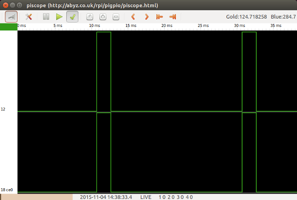
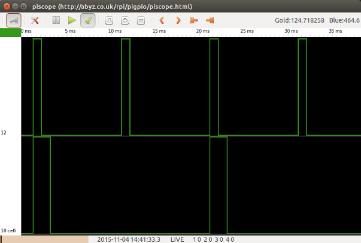

Examining PWM with Piscope
Posted on Sat 15 August 2015 in electronics by ryanday • Tagged with raspberry pi 2, pwm, piscope
I've been experimenting with Piscope recently and simply had to write a little bit about it. Need to look at some waves, but don't have an oscilloscope? Can't get out to your local Makerspace?
Look no further than Piscope.
Piscope is an easy way to view the state of your GPIOs. You can run it remotely from your desktop. You can record sessions, play them back, its a nice program. You can't get as involved as you could with an oscilloscope, but this is a pretty good way to visualize whats happening on the Pi.
But just to get started, how about we try to drive two servos using PWM from the Raspberry Pi 2. First follow the Piscope instructions to get the scope up and running on your desktop.
import pigpio
import time
import math
def basic_loop(gpio1, gpio2):
"""
Demonstrate simple servo control by setting the pulsewidth
"""
pi = pigpio.pi()
# 1500us is a safe width for unknown servos
pi.set_servo_pulsewidth(gpio1, 1500)
pi.set_servo_pulsewidth(gpio2, 1500)
# We shouldn't hear any clicking or jittering
time.sleep(5)
# We'll sweep from low to high inside the safe range
for i in range(1000, 2000, 15):
pi.set_servo_pulsewidth(gpio1, i)
pi.set_servo_pulsewidth(gpio2, i)
time.sleep(.15)
# Shut off servo control, and close out
pi.set_servo_pulsewidth(gpio1, 0)
pi.set_servo_pulsewidth(gpio2, 0)
pi.stop()
Just to be safe for anyone copy/pasting the code, I'm using known safe values for a servo. I took a screen shot near the end of the sweep. You can see that the pulse is just about 2ms long and that we are getting 1 pulse every 20ms. If you are using actual servos, you can watch the pulse increase as your servos react.
That is fairly basic though. We can also get more indepth into how PWM is actually working. Let's create a more complex loop that will sweep our servo range. This loop will allow us to specify our own frequency, and tweak the duty cycle exactly as we like.
def advanced_loop(gpio1, gpio2, freq1, freq2):
"""
Demonstrate advanced PWM control by setting the
frequency and duty cycle manually
"""
pi = pigpio.pi()
# Set the range to be 1000 to give us plenty of
# small steps to increment
pi.set_PWM_range(gpio1, 1000)
pi.set_PWM_range(gpio2, 1000)
# To test we are using 100Hz and 50Hz. This should
# give us a pulse every 10ms.
pi.set_PWM_frequency(gpio1, freq1)
pi.set_PWM_frequency(gpio2, freq2)
# Since we get a pulse every 10ms, and our servo
# can only be roughly 2ms wide, we can only set
# the duty cycle up to 10% of our range. This is
# because our 50Hz signal will grow twice as fast
# as the 100Hz signal, and we don't want to exceed
# the 2ms pulse width.
for i in range(1, 100, 2):
pi.set_PWM_dutycycle(gpio1, i)
pi.set_PWM_dutycycle(gpio2, i)
time.sleep(.15)
# Once we set both GPIOs to have the same frequency,
# we can see their pulse widths match.
pi.set_PWM_frequency(gpio2, freq1)
time.sleep(2)
# Shut everything down
pi.set_PWM_dutycycle(gpio1, 0)
pi.set_PWM_dutycycle(gpio2, 0)
pi.stop()
We will use a 100Hz frequency for the first GPIO, and a 50Hz frequency for the second. Typically, a 50Hz frequency is used for controlling a servo.
We can see by looking at the waves that our pulse width depends on the frequency and the dutycycle. Even though we chose the same duty cycle for both GPIOs, the width of GPIO12 is just half of GPIO18. We get the GPIO12 pulse twice as often, but this doesn't matter.
This doesn't do much for us except help visualize what is happening with the pulse. If your servo can make adjustments faster than 50Hz, then this may be helpful. Your dutycycle would have to be adjusted, but you could update your servo faster than every 20ms as well.
Pololu has some great info on servos and multiplexing and how these numbers all work together. Even though you don't have access to an oscilloscope, Piscope can help you play along with their tutorials.